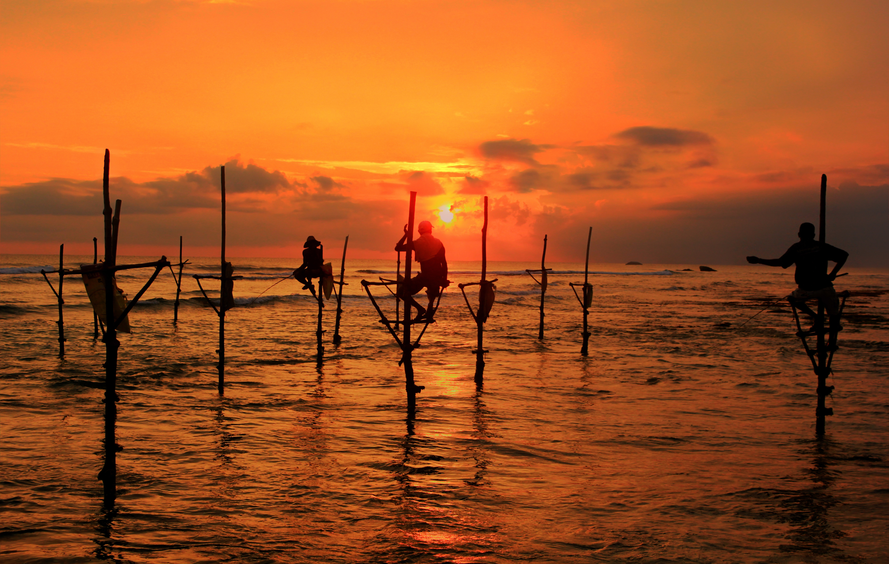
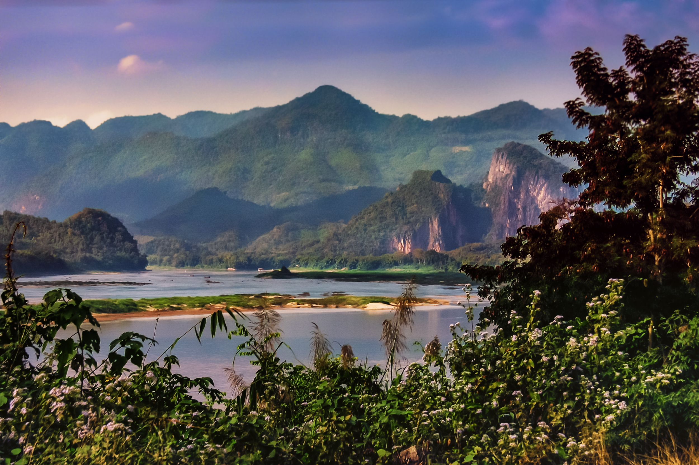
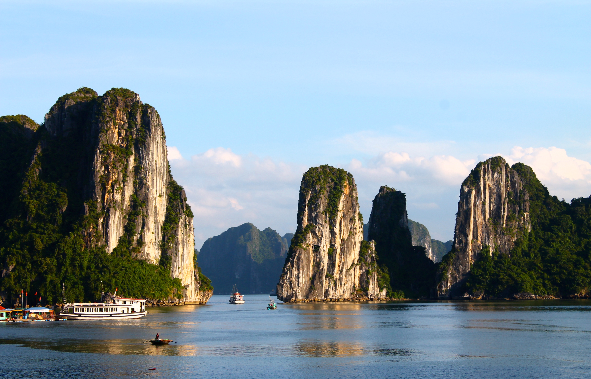

Sri Lanka
Sri Lanka is an island nation in South Asia, renowned for its stunning beaches, ancient temples, rich biodiversity, and vibrant cultural heritage, offering a unique blend of natural beauty and history.

Main cities to visit:
- Colombo
- Negombo
- Dambulla
To know something more about Sri Lanka visit: Wikipedia.
Laos
Laos is a landlocked country in Southeast Asia, famous for its mountainous terrain, lush jungles, and serene Buddhist temples, offering a peaceful and culturally rich experience.
Main cities to visit:
- Vientiane
- Luang Prbang
- Pakse

To know something more about Laos visit: Wikipedia .
Vietnam
Vietnam is a Southeast Asian country known for its breathtaking natural landscapes, from lush rice terraces to pristine beaches, as well as its rich history, vibrant culture, and warm hospitality.
Main cities to visit:
- Hanoi
- Ho Chi Min
- Dang Nan

To know something more about Vietnam visit: Wikipedia.